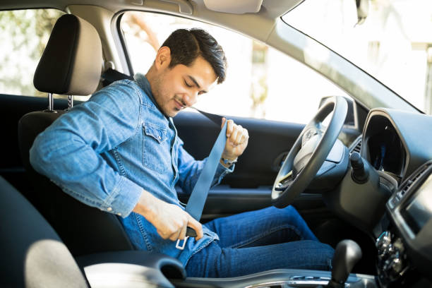
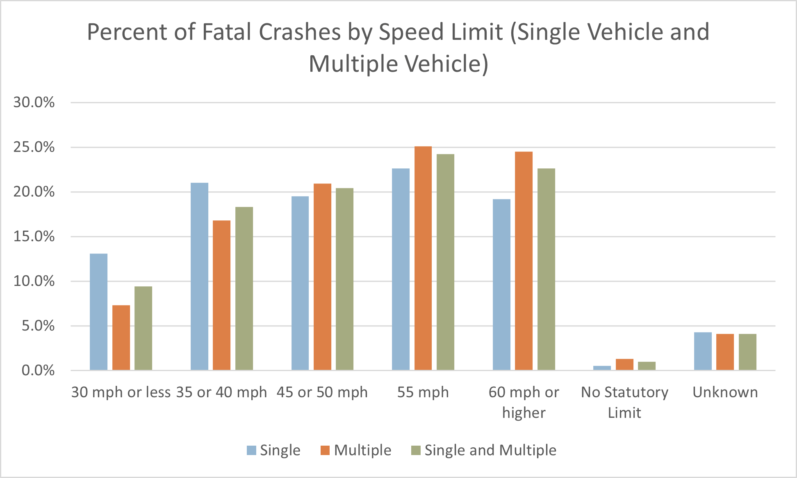
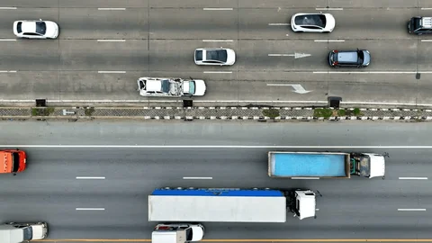
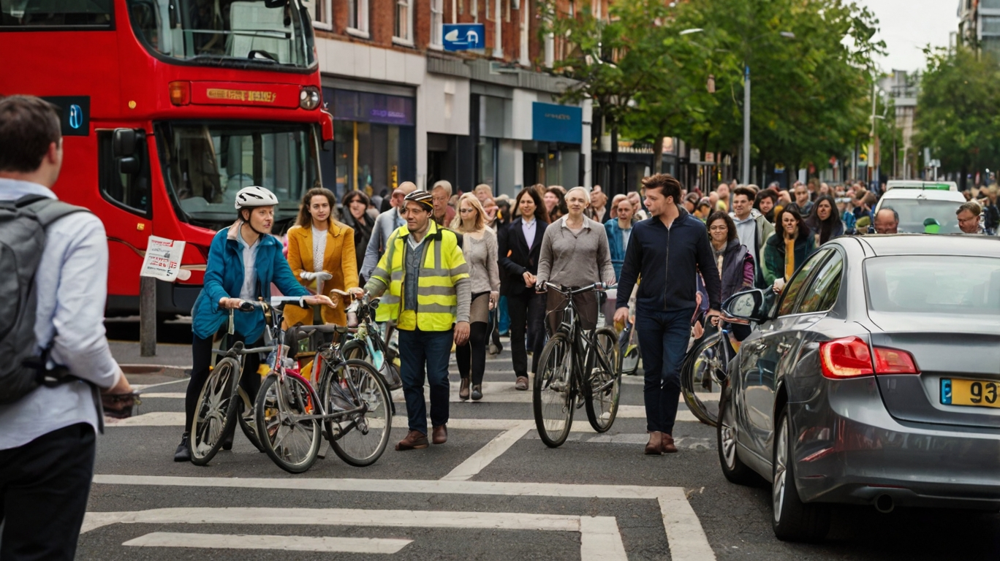

Protecting Lives
The foremost reason for prioritizing road safety is the protection of human life. According to the World Health Organization, approximately 1.35 million people die each year due to road traffic accidents, making it one of the leading causes of death globally.
Preventing Injuries
Road accidents often lead to severe injuries that can have lasting physical, emotional, and financial impacts on individuals and their families. Implementing safety measures such as wearing seat belts and obeying speed limits can reduce the risk of injuries by up to 50%.

Economic Impact
Road accidents impose a substantial economic burden on society, costing billions annually in medical expenses, property damage, and lost productivity. By promoting road safety, governments can save significant amounts of money that could be redirected towards societal development.

Traffic Flow and Efficiency
Adhering to traffic rules enhances the smooth flow of traffic, reducing congestion and commute times. This efficiency contributes to a more effective transportation system overall.

Environmental Benefits
Safe driving practices contribute to environmental sustainability by promoting fuel-efficient driving, which reduces emissions and minimizes pollution.
Quality of Life
Safe roads enhance the overall quality of life for individuals and communities. When people feel secure while traveling, it fosters a sense of well-being and confidence in the transportation infrastructure.
Collective Responsibility
Road safety is a shared responsibility that requires the commitment of all road users. Education and awareness campaigns are vital in instilling a culture of responsibility among drivers, pedestrians, and cyclists alike.
